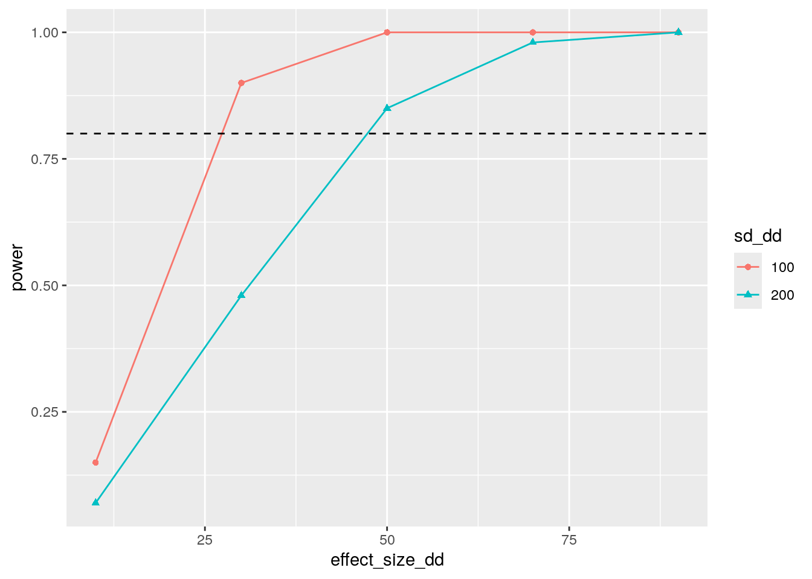
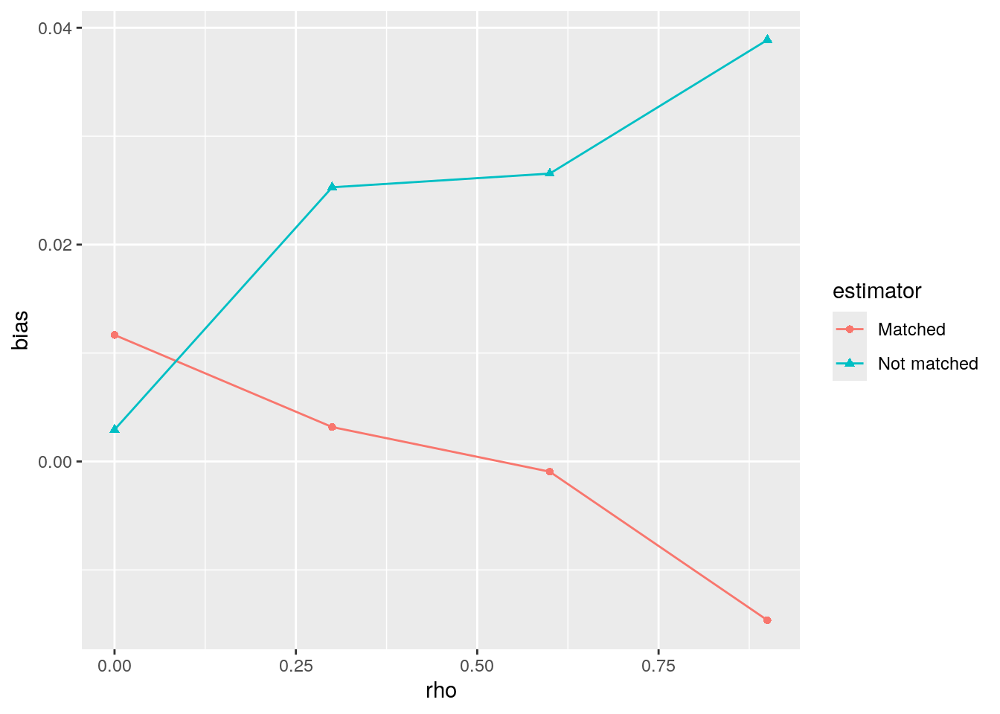

Power Analysis using DeclareDesign
DeclareDesign is a system to simulate Research Designs. This is useful for power analysis, because it is often hard to include things like clustering and covariates in standard power calculators.
Resources for learning about DeclareDesign:
- Slides by the authors of DeclareDesign: Graeme Blair, Alex Coppock, Macartan Humphreys
- The DeclareDesign CheatSheet
- The book Research Design in the Social Sciences: Declaration, Diagnosis, and Redesign
Read at least the slides before going forward!
Simple Power Calculation
Let’s first do some power calcuations. I will use Rhomis data from Burundi, you can get the data here.
Loading data
I do some data wrangling, like creating village codes based on y-coordinates, and some assorted cleaning.
library(tidyverse)
library(DeclareDesign)
n_clusters = 18
rhomis <-
read_csv("data/RHoMIS_Indicators.csv") %>%
filter(Country == "Burundi") %>%
# split the sample in villages, by lattitude
filter(!is.na(GPS_LAT)) %>%
arrange(GPS_LAT) %>%
mutate(village = rep(1:n_clusters, each = nrow(.) / n_clusters , length.out = nrow(.))) %>%
select(village,HHsizeMAE,HouseholdType,Head_EducationLevel,LandOwned,HFIAS_status,NFertInput) %>%
# create some variables
mutate(HFIAS_status = factor(HFIAS_status, levels = c("FoodSecure", "MildlyFI", "ModeratelyFI", "SeverelyFI")),
food_secure = 1 * (as.numeric(HFIAS_status) <= 3),
educated = 1*(Head_EducationLevel != "No_school"),
female = 1* (HouseholdType == "woman_single")) %>%
mutate(hh = row_number()) %>%
select(!HFIAS_status) %>%
# there are too many missings in my data; these seem reasonable to assume to be 0 when missing:
mutate(across(c(LandOwned,NFertInput,educated),
~ if_else(is.na(.x),0,.x)))
mean(rhomis$HFIAS_status == "FoodSecure")## [1] NaNDeclare Design
Now it’s time to start declaring our design. The first element of the
design is the model, using declare_model() which essentially is my data.
declare_model() follows the syntax of fabricate(),
which allows you to generate an entirely new dataset.
For now we stick with existing data,
but the syntax is still the same as fabricate(),
so insead of using mutate() we can just supply new variables
after a comma.
In this case, I add potential outcomes, using potential_outcomes().
effect_size_simple <- 70
model_simple <-
declare_model(
rhomis,
potential_outcomes(Y ~ NFertInput + Z * effect_size_simple)
)The potential outcomes are generated using potential_outcomes().
This will create two variables Y_Z_1 and Y_Z_0, which are
the potential outcomes if having received treatment (Z == 1) or not.
Note that I will generate Z in the next step.
Then it’s time to think about assignment. I do a clustered randomization, based on the villages:
Next, I declare my theoretical quantity of interest is the treatment effect in year 1. This is basically my research question.
Since I won’t be able to observe Y_Z_1 for the control group, nor Y_Z_0 for the treatment group, I will need an estimation strategy. A simple difference in means:
estimator_simple <-
declare_estimator(Y ~ Z,
clusters = village,
inquiry = "ATE",
term = "Z",
label = "Simple")Finally, I combine all these elements to declare my design. Note that it’s only here that R starts actually running the code to randomize things. The previous was just declaration!
design_simple <- model_simple + assignment_simple + inquiry_simple + measurement_simple + estimator_simple
summary(design_simple)##
## Research design declaration summary
##
## Step 1 (model): declare_model(rhomis, potential_outcomes(Y ~ NFertInput + Z * effect_size_simple))
##
## N = 290
##
## Added variable: village
## min median mean max sd N_missing N_unique
## 1 9 9.44 18 5.23 0 18
##
## Added variable: HHsizeMAE
## min median mean max sd N_missing N_unique
## 0.6 4.36 4.46 9.29 1.77 0 171
##
## Added variable: HouseholdType
## couple man_single polygamous woman_single
## 218 4 7 61
## 0.75 0.01 0.02 0.21
##
## Added variable: Head_EducationLevel
## N_missing N_unique class
## 70 6 character
##
## Added variable: LandOwned
## min median mean max sd N_missing N_unique
## 0 1 5.39 1000 58.8 0 63
##
## Added variable: NFertInput
## min median mean max sd N_missing N_unique
## 0 16 72.71 7500 465.79 0 44
##
## Added variable: food_secure
## 0 1
## 160 130
## 0.55 0.45
##
## Added variable: educated
## 0 1
## 106 184
## 0.37 0.63
##
## Added variable: female
## 0 1
## 229 61
## 0.79 0.21
##
## Added variable: hh
## min median mean max sd N_missing N_unique
## 1 145.5 145.5 290 83.86 0 290
##
## Added variable: ID
## N_missing N_unique class
## 0 290 character
##
## Added variable: Y_Z_0
## min median mean max sd N_missing N_unique
## 0 16 72.71 7500 465.79 0 44
##
## Added variable: Y_Z_1
## min median mean max sd N_missing N_unique
## 70 86 142.71 7570 465.79 0 44
##
## Step 2 (assignment): declare_assignment(Z = cluster_ra(clusters = village, prob = 0.5))
##
## Added variable: Z
## 0 1
## 144 146
## 0.50 0.50
##
## Step 3 (inquiry): declare_inquiry(ATE = mean(Y_Z_1 - Y_Z_0)) -------------------
##
## A single draw of the inquiry:
## inquiry estimand
## ATE 70
##
## Step 4 (measurement): declare_measurement(Y = reveal_outcomes(Y ~ Z)) ----------
##
## Added variable: Y
## min median mean max sd N_missing N_unique
## 0 70 107.95 7570 469.47 0 62
##
## Step 5 (estimator): declare_estimator(Y ~ Z, clusters = village, inquiry = "ATE", term = "Z", label = "Simple")
##
## Formula: Y ~ Z
##
## A single draw of the estimator:
## term estimator estimate std.error statistic p.value conf.low conf.high
## Z Simple 132.8381 59.24667 2.242119 0.03948933 7.231944 258.4442
## df outcome inquiry
## 15.98618 Y ATENote that the results of my three estimators are identical, which is as expected.
Diagnosing Design and calculating power
If you want to browse a version of the data created by your design,
use the draw_data() function. This is useful to examine the properties of the data.
## # A tibble: 290 × 15
## village HHsizeMAE HouseholdType Head_EducationLevel LandOwned NFertInput
## <int> <dbl> <chr> <chr> <dbl> <dbl>
## 1 1 2.2 woman_single <NA> 3.12 5
## 2 1 6.9 couple primary 4.69 26
## 3 1 1.86 couple No_school 2 40
## 4 1 6.92 polygamous <NA> 0.72 0
## 5 1 7.06 couple primary 0.312 10
## 6 1 4.3 couple No_school 0.5 25
## 7 1 4.94 couple primary 1.25 25
## 8 1 5.06 couple primary 1 60
## 9 1 1.5 couple primary 37 0
## 10 1 2.18 couple primary 1.88 0
## # ℹ 280 more rows
## # ℹ 9 more variables: food_secure <dbl>, educated <dbl>, female <dbl>,
## # hh <int>, ID <chr>, Y_Z_0 <dbl>, Y_Z_1 <dbl>, Z <int>, Y <dbl>Now to calculate our power. The diagnose_design() will run our
model 500 times and our power is simply the fraction of times we
find a statistically significant effect.
##
## Research design diagnosis based on 500 simulations. Diagnosis completed in 5 secs. Diagnosand estimates with bootstrapped standard errors in parentheses (100 replicates).
##
## Design Inquiry Estimator Outcome Term N Sims Mean Estimand
## design_simple ATE Simple Y Z 500 70.00
## (0.00)
## Mean Estimate Bias SD Estimate RMSE Power Coverage
## 67.30 -2.70 59.82 59.82 0.23 1.00
## (2.38) (2.38) (0.84) (0.81) (0.02) (0.00)Our power is 0.23, meaning we found a significant result in 23% of our model runs. That’s way lower than the traditional 80% threshold.
How large should our effect size be to reach a power of 0.8?
We can use the redesign() function for this.
Redesign allows you to vary certain parameters of your design,
and run the design 500 times for each value of the parameter.
Here I set it to run 200 times, as that takes long enough
already.
set.seed(1)
diagnosis_simple <-
design_simple %>%
redesign(effect_size_simple = seq(100,300,50)) %>%
diagnose_design(sims = 200) %>%
tidy() %>%
as_tibble()Now, I want a nice plot.
For this I filter the tibble I created, and pipe it into ggplot():
diagnosis_simple %>%
filter(diagnosand == "power") %>%
select(effect_size_simple,power = estimate) %>%
ggplot(aes(x = effect_size_simple, y = power)) +
geom_line() +
geom_point() +
geom_hline(yintercept=0.8,linetype=2) We can reliably detect an effect size between 150 and 200 kgs of fertilizer. The mean fertilizer use is 70kg, so that seems unlikely to be realistic. Perhaps we should add covariates?
Adding more estimators
I define another estimator that includes covariates in its model specification, and add it to my original design, hoping this will increase power.
estimator_simple_cov <-
declare_estimator(Y ~ Z + LandOwned + educated + female,
clusters = village,
inquiry = "ATE",
term = "Z",
label = "Simple Cov")
design_simple_cov <- design_simple + estimator_simple_cov
set.seed(1)
diagnosis_simple_cov <-
design_simple_cov %>%
redesign(effect_size_simple = seq(100,300,50)) %>%
diagnose_design(sims = 200) %>%
tidy() %>%
as_tibble()diagnosis_simple_cov %>%
filter(diagnosand == "power") %>%
rename(power = estimate) %>%
ggplot(aes(x = effect_size_simple, y = power, color = estimator, shape = estimator)) +
geom_line() +
geom_point() +
geom_hline(yintercept=0.8,linetype=2) ## Error in eval(expr, envir, enclos): object 'diagnosis_simple_cov' not foundTurns out it doesn’t help at all…
Dif in diff
We can of course also opt for a diff-in-diff design. But then we have to pretend we have two rounds of data collection.
For that, I prefer to use dplyr,
but it should be possible with fabricate() as well.
I first rename all our time-variant varaible to have _0 at the end,
create a bunch of correlated varaibles with _1 at the end, and then pivot_longer.
effect_size_dd <- 70
sd_dd <- 100
model_dd <- declare_model(
rhomis %>%
# add one more year
rename_with(~ paste0(., "_0"), HHsizeMAE:female) %>%
mutate(food_secure_1 = correlate(given = food_secure_0, draw_handler = draw_binomial, prob = mean(food_secure_0) , rho = 0.9),
HHsizeMAE_1 = HHsizeMAE_0 + rnorm(n = nrow(.), mean = 0, sd = 0.1),
NFertInput_1 = pmax(0,NFertInput_0 + rnorm(n = nrow(.), mean = 0, sd = sd_dd))) %>%
pivot_longer(ends_with(c("_0","_1")),
names_to = c(".value", "t"),
names_pattern = "(.*)_([0-9]+)$",
values_drop_na = TRUE,
names_transform = list(t = as.integer)),
potential_outcomes(Y ~ NFertInput + Z * effect_size_dd)
)I modify the inquiry and assignment to only take into account t == 1
inquiry_dd <-
declare_inquiry(ATE = mean(Y_Z_1 - Y_Z_0), subset = (t == 1))
assignment_dd <-
declare_assignment(treatment_group = cluster_ra(clusters = village, prob = 0.5),
Z = t * treatment_group)Measurement is unchanged:
Then I use feols()
from the fixest
package to estimate a Two-way fixed effects (2FE) model.
This can be easily extended to more complex
designs (but beware!).
library(fixest)
# library(broom)
estimator_dd <-
declare_estimator(Y ~ Z | treatment_group + t,
cluster = "village",
.method = feols,
term = "Z",
inquiry = "ATE",
label = "2FE")Let’s have a look at our power now!
Of course, in a DiD setting, power depends not only on the effect size, but also on how well the years correlate.
I therefore also vary the sd_dd variable, which adds increase between-year variation
design_dd <- model_dd + assignment_dd + inquiry_dd + measurement_dd + estimator_dd
set.seed(1)
diagnosis_dd <-
design_dd %>%
redesign(effect_size_dd = seq(10,90,20),
sd_dd = c(100,200)) %>%
diagnose_design(sims = 100) %>%
tidy() %>%
as_tibble()Our power is now a lot better, even if we turn up the variance
diagnosis_dd %>%
filter(diagnosand == "power") %>%
rename(power = estimate) %>%
mutate(sd_dd = factor(sd_dd)) %>%
ggplot(aes(x = effect_size_dd, y = power, color = sd_dd, shape = sd_dd)) +
geom_line() +
geom_point() +
geom_hline(yintercept=0.8,linetype=2) 
Propsensity score matching
Finally, let’s imagine a Propensity Score matching scenario. We therefore need to pretend treatment isn’t random, but is correlated to the outcome.
Let’s also look at food_secure, since it’s binary, and thus adds a twist here and there.
Finally, I will use the resample_data() function to pretend that we can visit
more households than are in my original data set.
Declare Design
Let’s put this in declare design.
Treatment assignment is as follows:
- 50% of the villages are selected for treatment. This is just random.
- Roughly 50% of the households are selected. The selection indicator will have
a correlation of
rhowith the household being educated, usingfabricatr’scorrelate()function. Education is also a strong predictor offood_security, creating inherent bias.
I compare a standard difference in means, as well as a custom matching function that
uses the MatchIt package to create a balanced data set, that I can then use for
regular regressions, weighted by the propensity score.
set.seed(1)
library(MatchIt, exclude("select")) # the select function would conflict with dplyr
# this syntax requires R 4.0 or higher
# set parameters
effect <- 0.2
rho <- 0.2
population_psm <- declare_population(
# rhomis %>%
# mutate(treated_hh = correlate(given = educated, draw_handler = draw_binary, prob = 0.5 , rho = rho),
# potential_outcomes(Y ~ pmin(1,food_secure + Z * draw_binary(effect,nrow(.)))))
N = nrow(rhomis),
rhomis,
potential_outcomes(Y ~ pmin(1,food_secure + Z * draw_binary(effect,N)))
)
assignment_psm <- declare_assignment(
treated_hh = correlate(given = educated, draw_handler = draw_binary, prob = 0.5 , rho = rho),
treated_vill = cluster_ra(clusters = village, prob = 0.5),
Z = treated_hh * treated_vill
)I then re-sample from the original data using resample_hhs() I define below.
To include the funciton in our design, we need to use declare_step()
- I ensure I have more control household than treatment households.
- I drop any untreated households in treated villages.
- Compared to the treatment hhs in each cluster, I sample twice the number of control hhs.
This simulates that we can’t get control households in treated villages, for example due to fears of
clusters_treat <- 50
hh_treat <- 15
clusters_control_multi <- 1 # multiplier for oversampling control clusters
hh_control_multi <- 2 # multiplier for oversampling control hhs
resample_hhs <- function(data){
# this function filters any control househols in treated communities
# and it sets the sample size
data %>%
mutate(drop = if_else(treated_vill == 1 & treated_hh == 0,1,0)) %>%
filter(drop != 1) %>%
# sample from treated villages and untreated villages
group_by(treated_vill) %>%
do({
if (unique(.$treated_vill) == 1) {
resample_data(., N = c(village = clusters_treat, hh = hh_treat),unique_labels = TRUE)
} else {
resample_data(., N = c(village = clusters_control_multi * clusters_treat, hh = hh_control_multi * hh_treat), unique_labels = TRUE)
}
})
}
resampling_psm <- declare_step(
handler = resample_hhs
)Measurement and inquiry are standard. I also add an OLS estimator to check for bias.
measurement_psm <- declare_measurement(Y = reveal_outcomes(Y ~ Z)
)
inquiry_psm <- declare_inquiry(ATE = mean(Y_Z_1 - Y_Z_0)
)
estimator_notmatched_psm <-
declare_estimator(Y ~ Z,
clusters = village_unique,
inquiry = "ATE",
term = "Z",
label = "Not matched")Finally, I need to somehow put my matching model in DeclareDesign.
Fortunately, you can put any the output of any function into the declare_estimator() function
using the handler argument.
It does need to accept a data argument,
and output a tidy() dataframe.
My function custom_match() accepts a data frame, uses MatchIt to create
a matched data set,
I define a function that does that, and some labelling:
custom_match <- function(data, equation, outcome = "Y", term = "Z") {
# the command filter(term == term) wouldn't do anything, so this is a workaround
term_value <- term
# run the matching model
matchit_model <- matchit(equation,
data = data,
method = "nearest")
matched_df <- match.data(matchit_model)
# run a regression, weighted by the propensity score
lm_robust(Y ~ Z, clusters = village_unique, data = matched_df, weights = weights) %>%
tidy() %>%
mutate(outcome = outcome) %>%
filter(term == term_value)
}
estimator_matched_psm <- declare_estimator(
Z ~ HHsizeMAE + educated + LandOwned + NFertInput + female + NFertInput,
handler = label_estimator(custom_match),
inquiry = "ATE", # Tie the estimator to the declared inquiry
label = "Matched",
term = "Z",
)
design_psm <-
population_psm + inquiry_psm + assignment_psm + resampling_psm + measurement_psm + estimator_notmatched_psm + estimator_matched_psmChecking balance
It’s useful to explore the property’s of our matching estimator. First I draw data based on my design and create matched version of that data.
set.seed(1)
test_data <-
draw_data(design_psm) %>%
as_tibble()
matchit_model <- matchit(Z ~ HHsizeMAE + educated + LandOwned + NFertInput + female + NFertInput,
data = test_data,
method = "nearest")
matched_df <- match.data(matchit_model)Then I create balance table for the test_data:
library(modelsummary)
library(flextable)
# balance table
test_data %>%
mutate(Z = factor(Z, labels = c("Control", "Treatment"))) %>%
select(Z, Y, food_secure, HHsizeMAE, educated, LandOwned, NFertInput, female, NFertInput) %>%
datasummary_balance( ~ Z , data = .,
output = "flextable", stars = TRUE,
dinm = TRUE, dinm_statistic = "p.value") %>%
fix_border_issues() %>%
autofit()
| Control (N=1500) | Treatment (N=750) |
| |||
|---|---|---|---|---|---|---|
| Mean | Std. Dev. | Mean | Std. Dev. | Diff. in Means | p |
Y | 0.5 | 0.5 | 0.5 | 0.5 | 0.0 | 0.152 |
food_secure | 0.5 | 0.5 | 0.3 | 0.5 | -0.2*** | <0.001 |
HHsizeMAE | 4.6 | 1.6 | 4.1 | 1.9 | -0.5*** | <0.001 |
educated | 0.7 | 0.5 | 0.5 | 0.5 | -0.2*** | <0.001 |
LandOwned | 7.8 | 73.0 | 1.2 | 1.4 | -6.5*** | <0.001 |
NFertInput | 84.2 | 473.5 | 43.5 | 150.0 | -40.7** | 0.002 |
female | 0.2 | 0.4 | 0.4 | 0.5 | 0.2*** | <0.001 |
And for the matched_df, which is clearly more balanced.
Note that according to the documentation,
datasummary_balance() reports weighted means if a weights variable is present.
matched_df %>%
mutate(Z = factor(Z, labels = c("Control", "Treatment"))) %>%
select(Z, Y, food_secure, HHsizeMAE, educated, LandOwned, NFertInput, female, NFertInput) %>%
datasummary_balance( ~ Z , data = .,
output = "flextable", stars = TRUE,
dinm = TRUE, dinm_statistic = "p.value") %>%
fix_border_issues() %>%
autofit()
| Control (N=750) | Treatment (N=750) |
| |||
|---|---|---|---|---|---|---|
| Mean | Std. Dev. | Mean | Std. Dev. | Diff. in Means | p |
Y | 0.5 | 0.5 | 0.5 | 0.5 | 0.0 | 0.918 |
food_secure | 0.5 | 0.5 | 0.3 | 0.5 | -0.1*** | <0.001 |
HHsizeMAE | 4.3 | 1.4 | 4.1 | 1.9 | -0.2+ | 0.061 |
educated | 0.5 | 0.5 | 0.5 | 0.5 | 0.0 | 0.163 |
LandOwned | 1.3 | 1.3 | 1.2 | 1.4 | -0.1 | 0.114 |
NFertInput | 68.8 | 246.5 | 43.5 | 150.0 | -25.3* | 0.017 |
female | 0.4 | 0.5 | 0.4 | 0.5 | 0.0 | 0.747 |
Let’s run the models two times:
unmatched_model <- lm_robust(Y ~ Z, clusters = village_unique, data = test_data)
matched_model <- lm_robust(Y~Z, clusters = village_unique, data = matched_df, weights = weights)
modelsummary(list(lm = unmatched_model, psm = matched_model), output = "flextable",
gof_map = c("nobs","r.squared","adj.r.squared"))
| lm | psm |
|---|---|---|
(Intercept) | 0.503 | 0.473 |
(0.027) | (0.033) | |
Z | -0.032 | -0.003 |
(0.040) | (0.044) | |
Num.Obs. | 2250 | 1500 |
R2 | 0.001 | 0.000 |
R2 Adj. | 0.000 | -0.001 |
Both of these underestimate the treatment effect by a bit, as it should be around 0.2.
Bias
Now, let’s diagnose the design!
First, let’s examine bias, given selection effects.
The strength of the selection effect is given by rho,
so I use redesign() to vary it:
diagnosis_psm_bias <-
design_psm %>%
redesign(rho = seq(from = 0, to = 0.9, by = 0.3)) %>%
diagnose_design(sims = 100) %>%
tidy() %>%
as_tibble()And I put the result in a plot:
diagnosis_psm_bias %>%
filter(diagnosand == "bias") %>%
select(rho, bias = estimate, estimator) %>%
ggplot(aes(x = rho, y = bias,
shape = estimator, color=estimator)) +
geom_line() +
geom_point() 
Clearly, the more treatment is correlated to education, the higher the bias in the regular model. Bias is never extreme, however.
Power
Then, let’s examine power.
diagnosis_psm_power <-
design_psm %>%
redesign(clusters_treat = c(20,40,60),
effect = seq(0.1,0.4,0.1)) %>%
diagnose_design(sims = 100) %>%
tidy() %>%
as_tibble()When we plot the results, it seems sample size doesn’t affect power much
(not sure why, perhaps the resampling?).
The design can pick up an effect of 0.4,
meaning that 40% of the food insecure beneficaries become food secure.
The actual treatment effect would be lower, as some beneficiaries would
have been food secure before the intervention.